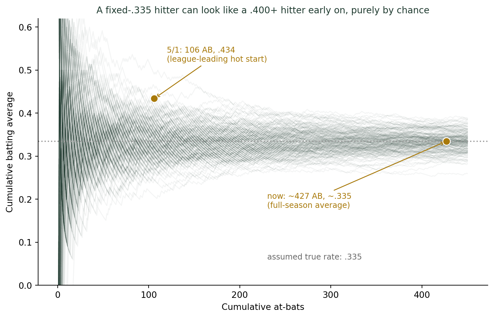
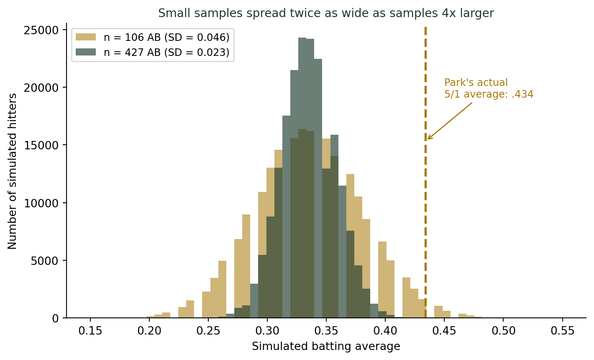

(기록의 착시, 대표값의 재발견) 작은 표본이 만드는 큰 착각 — 야구 타율 3할의 의미
통계기초
확률
SSG 랜더스 박성한은 2026년 5월 1일 기준 106타수에서 타율 4할3푼4리로 리그를 압도했다. 그런데 지금 시즌 타율은 3할3푼대로 내려와 있다. 무슨 일이 있었던 걸까? 타율은 사실 ’표본비율’이고, 표본 크기(타수)가 작을수록 진짜 실력과 무관하게 크게 흔들린다는 사실을 실제 기록과 시뮬레이션으로 함께 확인한다.
4할 3푼 3리에서 3할대로
2026년 4월, SSG 랜더스의 박성한은 리그를 압도하고 있었다. 개막 후 안타를 치지 못한 날이 거의 없었고, 4월 21일에는 19경기 연속 안타로 시즌 초반 최고 기록을 세우더니 나흘 뒤인 4월 24일에는 22경기 연속 안타로 그 기록을 다시 갈아치웠다. 5월 1일 기준 106타수 46안타, 타율 4할3푼4리로 2위와 큰 격차를 벌린 리그 단독 1위였다.
그런데 지금, 이 글을 쓰는 시점의 박성한 시즌 타율은 3할3푼대다. 여전히 훌륭한 성적이지만, 4월의 그 압도적인 숫자와는 분명히 다르다. 그 사이 박성한의 실력이 갑자기 나빠진 걸까? 통계적으로 보면 답은 “아니다”에 가깝다 — 애초에 4월의 4할3푼대라는 숫자 자체가, 아직 표본이 너무 작아서 실력보다 훨씬 부풀려져 있었을 가능성이 크다.
타율은 사실 “표본비율”이다
타율은 타수 중 안타의 비율, \(\hat{p} = \text{안타 수}/\text{타수}\)다. 통계학의 언어로 옮기면 이것은 매 타석을 안타(성공) 또는 아웃(실패)의 독립적인 베르누이 시행으로 볼 때의 표본비율이다. 동전 던지기에서 앞면 비율을 추정하는 것과 원리적으로 같다. 그리고 표본비율은 표본 크기가 작을수록 실제 확률(이 경우 “진짜 실력”)과 크게 어긋날 수 있다는 것, 이것이 통계학의 기본 원리다.
이 원리를 확인하기 위해, 매 타석 안타를 칠 진짜 확률이 정확히 33.5%로 고정된 가상의 타자를 만들어보자 — 지금 박성한의 시즌 타율을 잠정적인 “진짜 실력”으로 가정한 것이다.
옅은 초록 선 200개는 모두 “매 타석 안타 확률이 정확히 33.5%로 고정된” 같은 조건의 가상 타자들이다. 타수가 적은 왼쪽 구간에서는 선들이 위아래로 넓게 흩어져 있다가, 타수가 쌓이는 오른쪽으로 갈수록 점점 .335 근처로 모여든다. 박성한의 실제 두 지점(금색 점)을 겹쳐보면, 5월 1일의 4할3푼4리는 이 흩어짐의 자연스러운 범위 안에 있고, 지금의 3할3푼대는 타수가 쌓이며 그 흩어짐이 줄어든 결과와 정확히 같은 모양이다.
얼마나 드문 출발이었나
그렇다면 5월 1일의 4할3푼4리는 얼마나 이례적인 숫자였을까? 진짜 실력이 정확히 .335인 타자가 106타수까지 4할3푼4리 이상을 기록할 확률을 시뮬레이션으로 계산해보면 답이 나온다.

계산 결과, 진짜 실력이 .335인 타자가 106타수 안에 4할3푼4리 이상을 기록할 확률은 약 1.3% — 76번 중 1번꼴이다. 흔한 일은 아니지만, KBO 한 시즌에 규정타석을 채우는 타자만 수십 명이고 매년 4월마다 이런 “출발이 좋은” 선수가 나온다는 걸 생각하면, 리그 전체로 보면 누군가는 거의 매년 이 정도의 극단적인 출발을 보인다 — 지난 글에서 살펴본 “한 명만 보면 드물어도 리그 전체로 보면 흔한 사건”이라는 논리가 여기서도 그대로 적용된다. 다만 이번 글의 핵심은 조금 다르다. 연속 기록의 확률이 아니라, 타수가 늘어날수록 표본비율의 흔들림 자체가 줄어든다는 사실이다. 히스토그램에서 보듯 106타수 표본의 흩어짐(표준편차 0.046)은 427타수 표본의 흩어짐(0.023)의 정확히 두 배다 — 타수가 4배 늘면 흩어짐은 절반(=\(\sqrt{4}\)분의 1)으로 줄어든다는 통계학의 법칙과 정확히 일치한다.
프로야구가 이미 알고 있던 답: 규정타석
타율왕 같은 타이틀은 아무리 높은 타율을 기록해도 “규정타석”을 채우지 못하면 받을 수 없다. KBO의 규정타석은 팀 경기수 \(\times\) 3.1로 계산되며, 144경기 체제에서는 시즌 446타석이다. 이 규칙이 존재하는 이유가 바로 오늘 살펴본 원리다 — 표본(타석)이 작을 때의 반짝 타율은 실력의 증거로 인정하지 않겠다는, 프로야구가 이미 백여 년 전부터 실전에서 체득한 통계적 지혜다.
더 깊이: 표본평균의 흩어짐은 \(1/\sqrt{n}\)로 줄어든다
강의노트 〈확률표본 4. 정규분포로부터의 확률표본 — 표본평균과 표본분산의 샘플링 분포〉는 확률표본 \(X_1,\ldots,X_n\)의 표본평균이 \(\overline{X} \sim \mathcal{N}(\mu, \sigma^2/n)\)을 따른다고 정리한다. 안타 여부(\(1\) 또는 \(0\))를 베르누이 시행으로 보면 타율은 정확히 이 표본평균이고, \(\sigma^2 = p(1-p)\)다. 이 정리가 말하는 건 표본평균의 분산이 \(n\)에 반비례한다는 것 — 즉 표준편차(표준오차)는 \(\sqrt{n}\)에 반비례한다는 것이다. 오늘 시뮬레이션에서 타수가 106에서 427로 정확히 4.03배 늘어나자 흩어짐이 정확히 2.01배 줄어든 것이 바로 이 법칙이다(\(\sqrt{4.03} \approx 2.01\)). 표본을 두 배로 늘려도 흔들림은 절반이 아니라 약 29%(=\(1-1/\sqrt{2}\))만 줄어든다는 뜻이기도 하다 — 이래서 작은 표본의 인상적인 숫자를 “조금 더 지켜보면 금방 안정되겠지”라고 가볍게 여기면 안 된다.
결론: 시즌 초반 1위 명단은 원래 시끄럽다
나는 4월이면 학생들에게 그 해 타율 1위 명단을 보여준다. 매년 낯선 이름이, 혹은 뜻밖의 高타율이 올라와 있다. 어떤 해는 정말 그 선수의 물오른 실력이었고, 어떤 해는 6월이 되면 조용히 사라진다. 둘을 미리 구별할 방법은 없지만, 최소한 이것만은 분명히 말할 수 있다 — 타수가 100개 안팎일 때의 순위표는 원래 시끄럽고, 400개를 넘어가면 조용해진다. 박성한의 4월이 진짜 실력의 증거였는지, 표본이 작아 부풀려진 숫자였는지는 시즌이 끝나야 더 분명해지겠지만, 적어도 3할3푼대로 내려온 지금의 숫자를 “부진”이라고 부르는 건 통계적으로 정직하지 않다.